One of Damian's tasks during the week before Caption is making the badges for convention members.
One of Damian's tasks during the week before Caption is making the badges for convention members.
caption >> caption 2001 >> Damian's photos
Caption 2001 took place in the summer of 2001, in our usual venue, the Oxford Union Society.
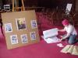
Setting up the ehibit of auction artwork.
Jeremy Dennis.
On Saturday afternoon we had an auction of donated artwork to raise money for cartooning classes.
One of Damian's tasks during the week before Caption is making the badges for convention members.
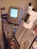 Damian used his ancient Macintosh Performa 5260 to design this year's badges.
 A guillotine is an invaluable tool for the home mini-comic maker and proves useful when making badges as well.
A guillotine is an invaluable tool for the home mini-comic maker and proves useful when making badges as well.
 We delegated the task of sticking safety pins to the back of the badges to our trusty gofers.
We delegated the task of sticking safety pins to the back of the badges to our trusty gofers.
Geneva Metzak.
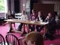
Discussion panel on moderin romance.
Jean-Paul Jennequin,
Paul Gravett,
Alex Williams,
X.
X.
Jeremy is no longer officiallyon teh committee but is still in charge of setting up the mail-art exhibition.
Jeremy Dennis.
The theme of the exhibition this year was romance.
 Rachael House inspects her own paper cuttings.
Rachael House inspects her own paper cuttings.
Rachael House.
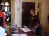
The Caption table collects attendees zines for sale on their behalf.
Jo Charman.
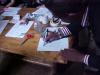
Signing a copy of the PANTS ANT comic
Woodrow Phoenix.

Richard Starzeki,
Andrew Richmond.
 Sunshine, beer and sketchpads in the garden on Sunday afternoon.
Sunshine, beer and sketchpads in the garden on Sunday afternoon.
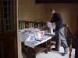 Setting up the Smallzone stall.
Shopping at Howard Stangroom's Capricorn Comics table.
Rachael House,
Jeremy Dennis.
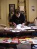
The Caption table, where Caption's gofers sell your minicomics on your behalf.
Tom Anderson.
 Before the James Kochalka Puppet Theatre can perform, they have to build their giant cardboard puppets. At CAPTION they invited random artists from the bar to help them out.
Before the James Kochalka Puppet Theatre can perform, they have to build their giant cardboard puppets. At CAPTION they invited random artists from the bar to help them out.
 They had a list of how many puppets they would need -- so many robots, so many monkeys, a Kurt, a Courtney, ...
They had a list of how many puppets they would need -- so many robots, so many monkeys, a Kurt, a Courtney, ...
 Once painted they have to be cut out.
Once painted they have to be cut out.
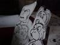 Monkeys
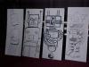 Robots!
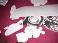 After the performance, the tattered remnants of the puppets are scattered about the "stage".
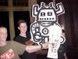 The audience are allowed to take home any of the puppets they think are still intact enough!
At the start of Andy Robert's workshop, the participants gather around the big table in the Morris Room.
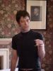
Andy was talking about objects, and what we need to do to depict them in a cartoon. Unfamiliar objects need more detail to describe them.
Andy Roberts.
 Woordrow Phoenix's
Woordrow Phoenix's
workshop starts with everyone in the audience writing the name of their favourite cartoon character on a bit of paper -- some of whi8ch are then drawn from a hat. Jean-Paul thus found himself portraying Hutch Owens.
Jean-Paul Jennequin.
 Boy genius Dexter.
Boy genius Dexter.
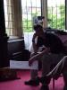
Niall became Hobbes the tiger.
Niall.
 Woodrow depicts the turbulent first date of Hobbes the tiger and Wile E. Coyote.
Woodrow depicts the turbulent first date of Hobbes the tiger and Wile E. Coyote.
Woodrow Phoenix.
The James Kochalka Puppet Theatre generously donated some extra props to the effort.
Jeremy distributes plot pointsto each team from beer glasses standing in for hats.
The Pen-and-Ink team throash out the details of their story.
Improvised scenery discovered by the digital camera team's location scouts.
 A few ingenously placed props transform the sunny garden in to a grim border-post.
A few ingenously placed props transform the sunny garden in to a grim border-post.
 Terry Wiley + lampshade = Galactic Emperor
Terry Wiley + lampshade = Galactic Emperor
How did the estranged couple get reaquainted? They both won prizes in the Emperor's erotic film contest.
"No wait, what's my motivation?"
 Pursuit!
Pursuit!
Jenni Cole,
Sonia X.
 The Pen and Ink team still found good use for their props. Ian models for Andy.
The Pen and Ink team still found good use for their props. Ian models for Andy.
Ian Snell.
One of Jeremy's wigs and a peper moustache transforms Alex in to a romantic lead!
Alex Williams.
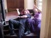 "I always wanted to do a death scene."
Cunningly disguised as Peter Cushing.
The climax of the Polaroid photostory
The digital photos are 'pasted' together with HTML.
Andy had to pencil and ink six whole pages while everyone else was out taking photos.
Andy Roberts.
The Polaroid photos are pasted up and the captions written.
 Looking at the resulting strips.
Looking at the resulting strips.
Jeremy Dennis.
The ultimate self-motivated workshop -- scribble pads scattered about the bar and outside tables.
Last modified 2005-04-28 |
<webmaster>